Справка 2 Математическая основа карт
2.1 Полезные ссылки
2.3 Интерфейс QGIS
При вызове QGIS Desktop и создании нового проекта окно программы будет состоять из основных панелей и окон: 1) самое большое окно в середине – окно карты, где происходит визуализация пространственных данных; 2) слева панель со слоями – перечнем основных используемых слоёв данных; 3) панель Браузера – встроенного проводника по файловой системе компьютера. Панелей и окон может быть больше. Их полный перечень становится доступен при щелчке правой кнопкой мыши по пустому месту сверху на панели. Включенная галочка в списке означает, что панель или окно активны.
Основные панели и окна QGIS Desktop
Как правило, по умолчанию открыта панель работы со слоями (на рисунке слева). Именно с помощью этой панели возможно добавление данных в проект. Обратите внимание, что для добавления векторных, растровых, табличных и прочих данных предусмотрены разные иконки. Добавлять данные в проект также можно двойным щелчком по объекту в браузере.
С помощью колёсика мыши можно изменять масштаб изображения, а с помощью зажатого колёсика можно передвигаться по карте. Внизу окна карты есть окошко с текущим масштабом изображения, рядом с ним окошко с координатами курсора. По умолчанию координаты даются в системе координат проекта карты, но единиц измерения можно поменять в свойствах проекта.
Проект QGIS – это файл, в котором хранятся ссылки на пространственные данные (но не сами пространственные данные!), а также настройки их символики, подписей, система координат карты, история геообработки и некоторые другие вещи. Файл проекта имеет формат QGZ и позволяет открыть проект в том виде (с теми слоями и их свойствами), в котором его последний раз сохраняли. Сохраните проект после добавления необходимых слоёв или изменения настроек их отображения Проект – Сохранить, либо нажмите на соответствующую иконку.
Открыть свойства самого проекта можно выбрав Проект – Свойства…
Окно свойств проекта
В свойствах проекта можно менять, например, систему координат. Обратите внимание, от изменения системы координат проекта система координат слоёв в этом проекте не поменяется. Программное обеспечение умеет на лету перепроецировать слои в разных системах координат, поэтому мы их в проекте можем видеть вместе (если, конечно, данные в них на одну территорию).
Для навигации по окну карты используйте панель инструментов перемещения по карте 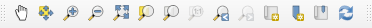. Среди них есть инструменты изменения масштаба, перемещения, показа карты в экстенте (полный охват).
2.4 Системы координат
В программном обеспечении ГИС традиционно принято выделять две большие категории систем координат (СК): 1) географические СК, 2) спроецированные СК
Географические системы координат основаны на датумах. Датум – это параметры размещения эллипсоида внутри тела земли. Для одного эллипсоида может быть много датумов. Единицы измерения в ГСК – широта и долгота в градусах.
Спроецированные системы координат основаны на проекциях. Проекция – это математически обусловленное правило перехода от поверхности эллипсоида к плоскости карты. Единицы измерения в спроецированных СК – метры, километры, мили, футы и прочие единицы длины.
Проекций великое множество, они подразделяются по характеру искажений и по применяемым для построения вспомогательным геометрическим фигурам. Подробнее об этом можно узнать из учебников [Картография, 2002; Серапинас, 2005]
В ГИС ПО системы координат могут быть представлены тремя основными форматами:
EPSG или ESRI код
EPSG коды – коды проекций, которые присваиваются Международной ассоциацией производителей нефти и газа. Все коды с возможностью подбора проекции для территории собраны в реестре. Более удобный инструмент для поиска собран в ресурсе. Например, у наиболее часто встречающейся ГСК WGS 1984 – EPSG:4326, у проекции WGS 1984 UTM 37N – EPSG:32637. Обратите внимание, что далеко не все существующие проекции и системы координат имеют код EPSG.
ESRI коды – коды проекций, которые присвиваются Институтом исследования систем окружающей среды (Environmental Systems Research Institute) – производителя программного обеспечения семейства ArcGIS.
WKT
WKT – Well-Known text – один из форматов записи параметров системы координат в текстовом человекочитаемом виде. Ознакомиться со стандартом можно по ссылке, раздел 7.5.
Например, запись для цилиндрической проекции Миллера на эллипсоиде WGS 1984 будет выглядеть следующим образом:
World_Miller_Cylindrical
WKT
PROJCRS["World_Miller_Cylindrical",
BASEGEOGCRS["WGS 84",
DATUM["World Geodetic System 1984",
ELLIPSOID["WGS 84",6378137,298.257223563,
LENGTHUNIT["metre",1]]],
PRIMEM["Greenwich",0,
ANGLEUNIT["Degree",0.0174532925199433]]],
CONVERSION["World_Miller_Cylindrical",
METHOD["Miller Cylindrical"],
PARAMETER["Longitude of natural origin",0,
ANGLEUNIT["Degree",0.0174532925199433],
ID["EPSG",8802]],
PARAMETER["False easting",0,
LENGTHUNIT["metre",1],
ID["EPSG",8806]],
PARAMETER["False northing",0,
LENGTHUNIT["metre",1],
ID["EPSG",8807]]],
CS[Cartesian,2],
AXIS["(E)",east,
ORDER[1],
LENGTHUNIT["metre",1]],
AXIS["(N)",north,
ORDER[2],
LENGTHUNIT["metre",1]],
USAGE[
SCOPE["unknown"],
AREA["World"],
BBOX[-90,-180,90,180]],
ID["ESRI",54003]]В разделе BASEOGCRS вы можете увидеть датум, эллипсоид с параметрами, единицу длины, начальный меридиан и угловые единицы.
В разделе CONVERSION указываются параметры False easting и False northing, которые обозначают сдвиг начала координат по соответствующим осям.
В разделе CS указывается, что используется декартова система координат (Cartesian) с двумя осями, далее для осей указаны их направления, порядок перечисления и единицы измерения.
В разделе USAGE указывается, на какую территорию применима данная проекция.
В разделе ID указан идентификатор этой проекции в ESRI.
Кроме этого, для многих проекций в параметрах могут указываться широта (Latitude of natural origin) и долгота (Longitude of natural origin) начала координат, если они отличаются от экватора и гринвича. Параметры сдвига начала счёта прямоугольных координат задаются относительно этой точки.
Для нормальных конических секущих проекций указываются две стандартные параллели (Latitude of 1(2)st standard parallel).
PROJ (PROJ4)
PROJ – формат записи системы координат, разработанный для библиотеки Proj, предназначенной для преобразования проекций.
Запись для уже знакомой нам проекции Миллера будет выглядеть следующим образом:
+proj=mill +R_A +lon_0=0 +x_0=0 +y_0=0 +datum=WGS84 +units=m +no_defsИз строки видно, что в ней содержится информация о начальном меридиане, сдвиге начала прямоугольной системы координат, датуме, а также единицах измерения.
Ресурс Projectionwizard позволяет подобрать проекцию под конкретную территорию. Возле названия рекомендуемой проекции вы можете увидеть ссылки на proj и wkt строки, которые можно скопировать.
Копирование Proj-строки из Projection Wizard
Чтобы добавить пользовательские системы координат в QGIS, необходимо вызвать пункт главного меню Установки – Пользовательские проекции…
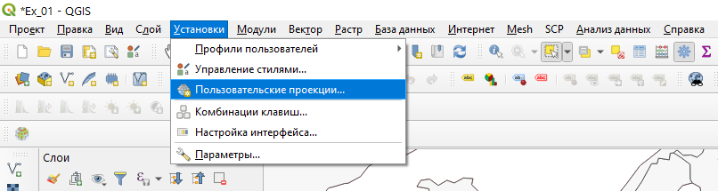
В открывшемся окне нажмите на плюсик для добавления новой СК. Заполните название проекции, укажите тип представления информации и вставьте строку с параметрами в окно. Название проекции следует давать латинскими буквами без пробелов.
Создание пользовательской СК
2.5 Искажения картографических проекций
Искажения могут быть наглядно представлены в виде индикатрис Тиссо. Индикатриса представляет собой эллипс, в котором большой a и малый b диаметры показывают направления наибольшего искажения частных масштабов длин. На земном эллипсоиде эти эллипсы все выглядят одинаково и представляют собой окружности, но при переводе в спроецированную систему координат искажаются в разной степени в зависимости от особенностей проекции и положении на карте. Радиусы в эллипсе вдоль меридиана m и параллели n характеризуют искажения частных масштабов длин вдоль меридианов и параллелей. По форме эллипсов можно понять, какого рода искажения характерны для данной проекции в конкретном месте карты: углов, площадей, форм.
Индикатрисы Тиссо в проекции Бонна
Частный масштаб площадей p может быть рассчитан следующим образом:
\[p= mn\sin(\theta)\]
Здесь \(\theta\) – угол между параллелью и меридианом в центре эллипса.
\[a + b= \sqrt{m^2 + n^2 + 2p}\]
\[a - b= \sqrt{m^2 + n^2 - 2p}\]
Искажения углов \(\omega\) можно найти по формуле
\[\sin(\frac{\omega}{2}) = \frac{(a-b)}{(a+b)}\]
2.6 Построение эллипсов искажения в QGIS
Для построения эллипсов искажений в QGIS необходимо установить дополнительный плагин. Его можно скачать по ссылке.
В окне программы в главном меню наверху выберите пункт Модули – Управление и установка модулей….
Окно установки модулей
Выберите пункт Install from ZIP и укажите путь к скаченному архиву. Нажмите на Install Plugin.
После установки модуль появится в выпадающем списке панелей инструментов под названием tiss. Сама панель состоит из одной кнопки 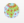. После нажатия на неё откроется окошко для построения эллипсов.
Окно для построения эллипсов искажений
В разделе Extent мы указываем охват, в пределах которого строятся эллипсы. В разделе Resolution указывается шаг частоты индикатрис по широте и долготе в градусах. В разделе Radius of the caps указывается радиус эллипса либо в градусах, либо в километрах. Параметры a и b – это полуоси эллипсоида. Cap segments и Line segments – количество сегментов у эллипса и линий сетки. Кнопка Run запускает построение эллипсов искажений и сетки меридианов и параллелей.
Если у вас возникли проблемы с построением эллипсов и сетки – их положение не совпадает с границами объектов из базы данных, обратитесь к технической справке ⇣
Для оценки параметров искажений в конкретных узлах градусной сетки на примере эллипсов искажений можно использовать соответствующие инструменты. Измерения в QGIS осуществляются с помощью инструмента линейки . Он находится на панели атрибутов 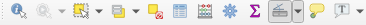. Там же можно выбрать инструмент для измерения углов . При измерении длин появляется окно, где показаны настройки измерений.
Окно измерений
Для измерения в проекции необходимо выбрать пункт Прямоугольный. Построение ломаной линии осуществляется нажатием левой кнопки мыши. Закончить сегмент можно правой кнопкой мыши.
Для удобства измерений можно включить инструмент прилипания, расположенные на одноименной панели. Прилипание (snapping) – это притягивание узлов рисуемой пользователем линии к уже существующим объектам. Для включения прилипания нажмите на кнопку магнита  . На этой же панели можно настроить прилипание, например, к местам пересечения объектов .
. На этой же панели можно настроить прилипание, например, к местам пересечения объектов .
2.7 Работа с компоновкой в QGIS
Итоговое оформление карты в ГИС-пакете QGIS осуществляется в режиме макета. Для этого надо найти пункт меню Проект – Создать макет. После ввода имени макета откроется отдельное окно, в котором нам предстоит скомпоновать наше картографическое изображение.
Вид макета карты
На пустом листе с помощью специальных кнопок слева можно разместить одно или несколько картографических изображений 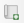, текстовые элементы 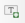, масштабную линейку , легенду 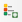. Для перемещения изображения карты внутри рамки используйте кнопку 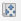
После добавления элементов карты их перечень появляется в окошке справа вверху. Если выделить элемент, ниже открываются его свойства. Для карты можно указать главный масштаб и систему координат.
Свойства элемента карты
В разделе Сетки нажмите на плюсик, чтобы добавить сетку. Выделив сетку и нажав на кнопку Modify Grid, мы можем редактировать её отображение.
Добавление сетки
Обратите внимание, что содержание картографического изображения в компоновке полностью синхронизируется с содержанием проекта. Если вы хотите установить линии сетки с подписями, то необходимо отключить слой с сеткой в основном окне программы во избежание избыточного дублирования.
По умолчанию для картографического изображения строится сетка в заданной СК. Если вы хотите построить градусную сетку, то для неё необходимо указать соответствующую геодезическую систему координат в настройках внешнего вида.
Настройка сетки координат
В разделе Draw Coordinates можно настроить ориентировку подписей выходов сетки, точность и другие параметры. Для выхода из свойств сетки нажмите на стрелку назад 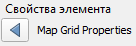
В свойствах карты включите опцию Рамка. Настройте её ширину.
Итоговый вариант компоновки может выглядеть следующим образом:
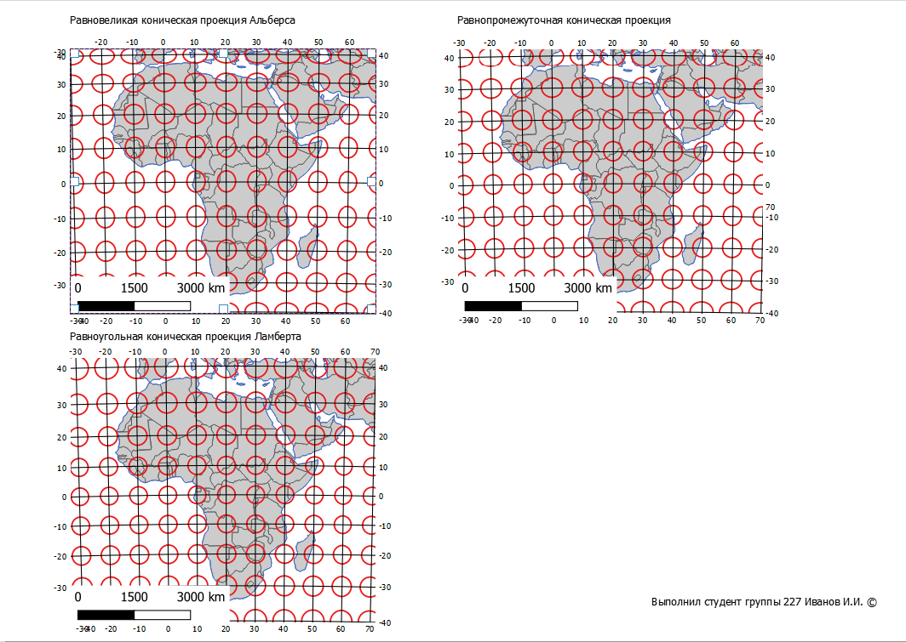
Для экспорта растрового изображения выберите Макет – Экспорт в …
2.8 Варианты решения некоторых технических проблем
2.8.1 Некорректное построение эллипсов искажений и координатной сетки
Если положение объектов карты и эллипсов искажений не совпадает, вероятно, что у вас возник конфликт системного разделителя. Используемый модуль работает с десятичным разделителем в виде точки. Если у вас в системе настроен десятичный разделитель в виде запятой, его необходимо поменять на точку.
В ОС Windows 10 это делается следующим образом:
- Вызовите пункт Параметры в меню Пуск.
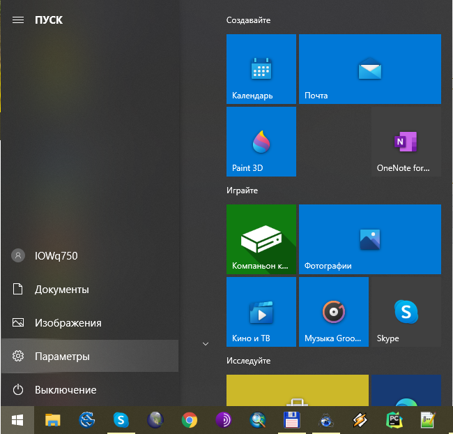
- Выберите пункт Время и язык.
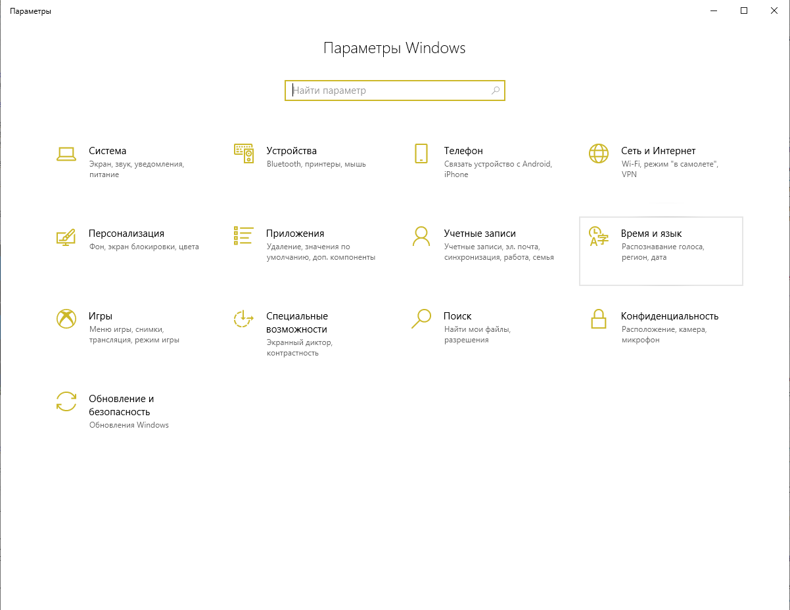
- Выберите пункт Формат даты, времени, региона.
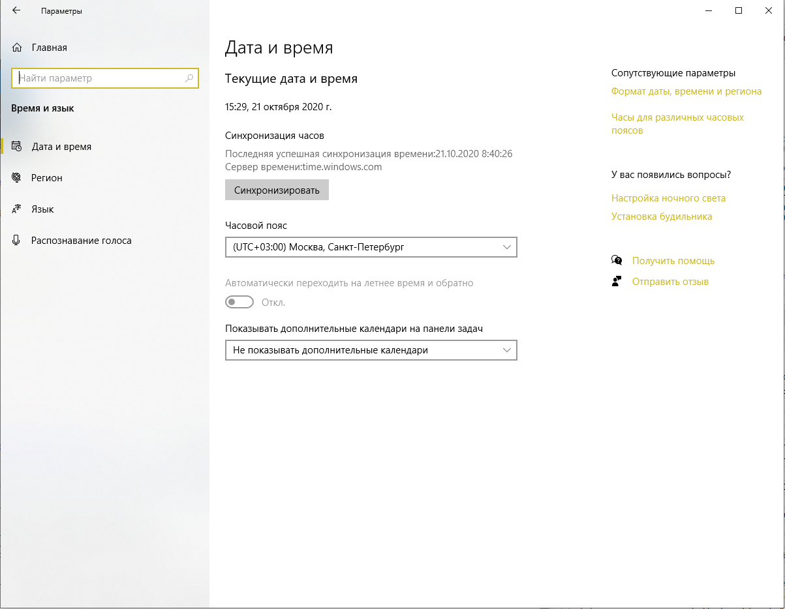
- Выберите пункт Дополнительные параметры даты и времени, региональные параметры.
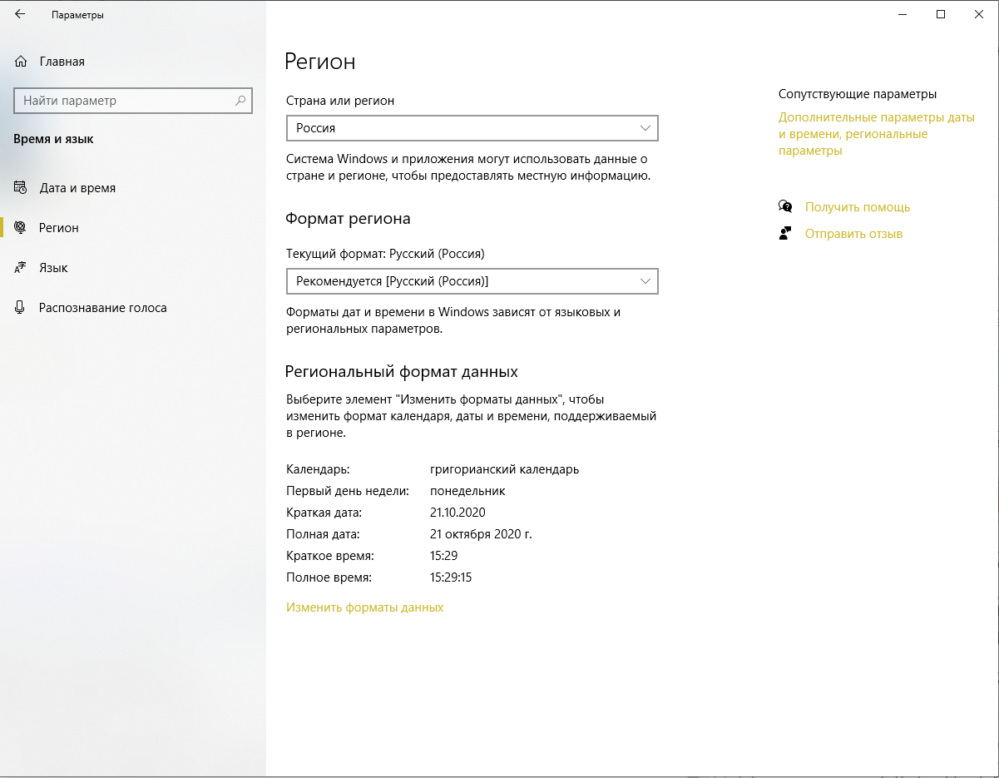
- Выберите пункт Изменение форматов даты, времени и чисел.
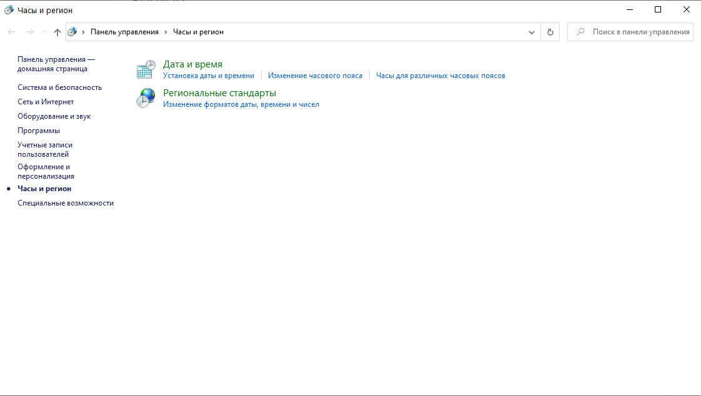
- В открывшемся окне вызовите Дополнительные параметры….
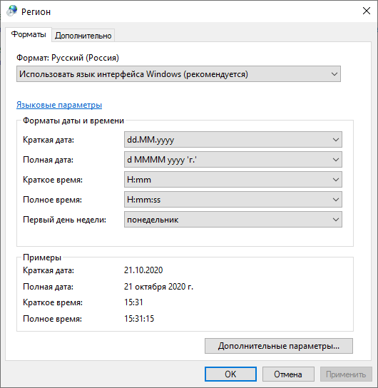
- Укажите в качестве разделителя целой и дробной части точку.
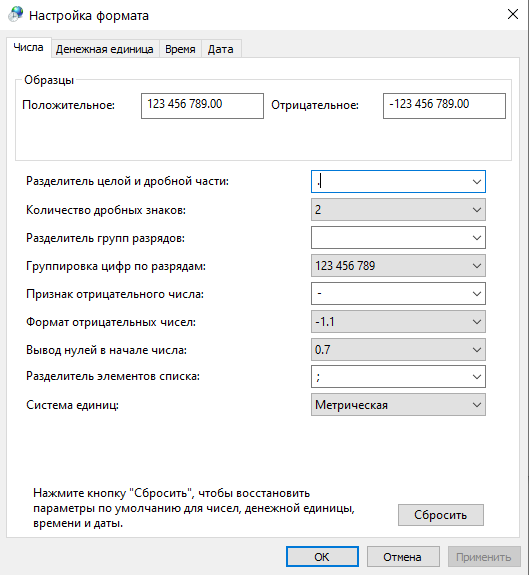
2.8.2 Некорректное отображение геометрии
Иногда при изменении проекции карты возникают проблемы с отображением векторных объектов, как на рисунке ниже.
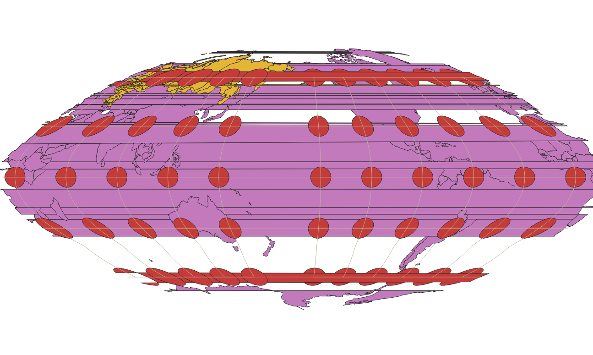
Это обусловлено ошибками геометрии при переходе через долготу 180°. К сожалению, на данный момент в QGIS нет решения данной проблемы. Картинка может стать менее загромождённой лишь при изменении масштаба (увеличении). Если это не помогает, остаётся только убрать заливку у полигональных объектов, что немного облегчит восприятие.
| Карпачевский А.М. Картография: практикум в QGIS. М.: Географический факультет МГУ, 2020. |